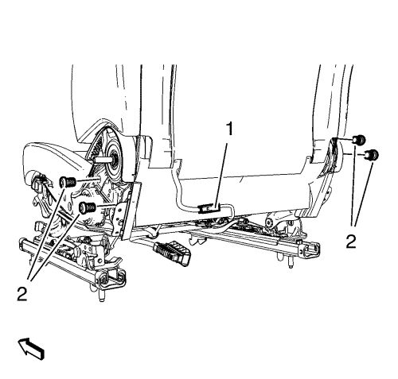
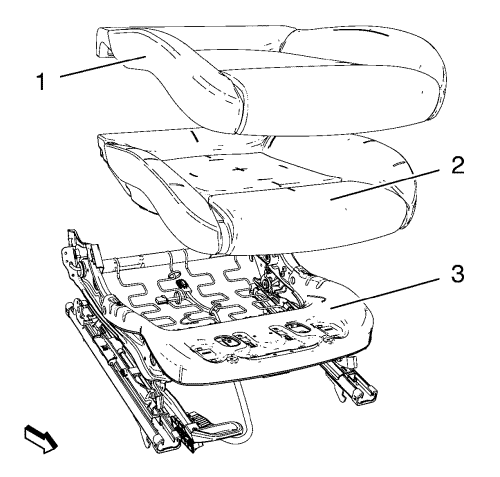

Sustitución del acolchado y la cubierta del cojín del asiento delantero
Procedimiento de desmontaje
Advertencia: Consulte Advertencia SIR en la sección Prólogo.
Advertencia: Sustituya el sistema de detección del pasajero como un conjunto completo, a fin de evitar provocar lesiones al acompañante. El depósito flexible, el sensor de presión, el cojín del asiento y el módulo de control están montados y calibrados como una unidad. Utilizar únicamente algunos de los componentes del equipo de servicio provocará el funcionamiento incorrecto del sistema de detección del pasajero.
- Desmonte el asiento del conductor o el acompañante. Consultar Sustitución del asiento del conductor o el acompañante .
- Retire la manilla reguladora del asiento delantero, si existe.
- Retire la manilla de reclinación del asiento delantero. Consultar Sustitución de la manilla para reclinar el asiento del conductor o del acompañante .
- Retire el panel de revestimiento interior del acolchado del asiento. Consultar Sustitución del panel de revestimiento interior del acolchado del asiento delantero .
- Retire el panel de revestimiento exterior del acolchado del asiento. Consultar Sustitución del panel de revestimiento exterior del acolchado del asiento delantero .

- Suelte la cubierta del acolchado del respaldo del asiento.
- Suelte y desconecte el enchufe del mazo de cables (1), si existe.
- Desmonte el tornillo del respaldo del asiento delantero (2) (cant: 4).
- Desmonte el respaldo del asiento.

- Suelte la cubierta del cojín (1) todo alrededor del marco del asiento (3).
- Desmonte del marco (3) la cubierta del cojín (1) junto con el acolchado (2).
- Desmonte del acolchado (2) la cubierta del cojín (1).
Procedimiento de montaje
- Monte la cubierta del cojín (1) en el acolchado (2).
- Monte la cubierta del cojín (1) junto con el acolchado (2) en el marco (3).
- Fije la cubierta del cojín (1) todo alrededor del marco del asiento (3).
- Monte el respaldo del asiento.
Precaución:Consulte Precaución con las fijaciones en la sección Prólogo.
- Apriete el tornillo (2) (Cant.: 4).
Apretar
35 N·m (26 lib. pie)
- Conecte y fije el enchufe del mazo de cables (1), si existe.
- Fije la cubierta del acolchado al respaldo del asiento.
- Monte el panel de revestimiento exterior del acolchado del asiento. Consultar Sustitución del panel de revestimiento exterior del acolchado del asiento delantero .
- Monte el panel de revestimiento interior del acolchado del asiento. Consultar Sustitución del panel de revestimiento interior del acolchado del asiento delantero .
- Monte la manilla de reclinación del asiento delantero. Consultar Sustitución de la manilla para reclinar el asiento del conductor o del acompañante .
- Monte la manilla reguladora del asiento delantero, si existe.
- Monte el asiento del conductor o el acompañante. Consultar Sustitución del asiento del conductor o el acompañante .
| © Copyright Chevrolet. Reservados todos los derechos |